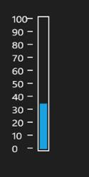
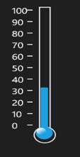

The Linear Gauge supports two types of Scales. They are:
· Linear
· Thermometer
The scale type can be changed using “ScaleType” property. The default ScaleType values is “Linear”.
The following code example illustrates how the ScaleType set to the Linear Gauge.
|
[XAML] <sync:LinearScale ScaleType="Linear" /> |
|
[C#] this.LinearGauge1.Scales[0].ScaleType = ScaleTypes.Linear; |

Figure 53: ScaleType set to ‘Linear’
|
[XAML] <sync:LinearScale ScaleType="Thermometer" /> |
|
[C#] this.LinearGauge1.Scales[0].ScaleType = ScaleTypes.Thermometer; |

Figure 54: ScaleType set to ‘Thermometer’